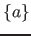
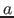
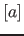
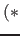
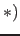

Next: LF-level Up: Beluga Reference Guide Previous: Command Options
This section describes both levels in EBNF1 metasyntax. In particular:

represents repeat production
zero or more times
represents optionally apply production
and
enclose comments in the grammar
sig ::= { lf_decl (* LF constant declaraction *)
| c_decl } (* Computation-level declaration *)
id refers to identifiers starting with a lower case letter and ID identifiers starting with an upper case letter.